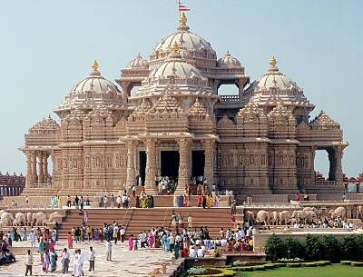

Beaches are where the world slows down and life feels lighter.
The
soft sand beneath your feet, the sound of waves meeting the shore,and the
endless horizon create a peace you can’t find anywhere else.
Whether
you seek adventure in the tides or calm in the sunsets,every beach offers
a moment that stays with you.
It’s not just a destination—it’s a
feeling, an escape,and an experience waiting for you to discover.

They are filled with a quiet energy that makes you forget the noise of daily life.Whether you visit for prayer, blessings, or just a moment of silence,temples offer a space to reflect and feel renewed.Each temple has its own history, traditions, and beauty—from ancient carvings to the sound of ringing bells.A visit to a temple isn’t just a trip; it’s an experience that brings peace to the mind and warmth to the heart.
